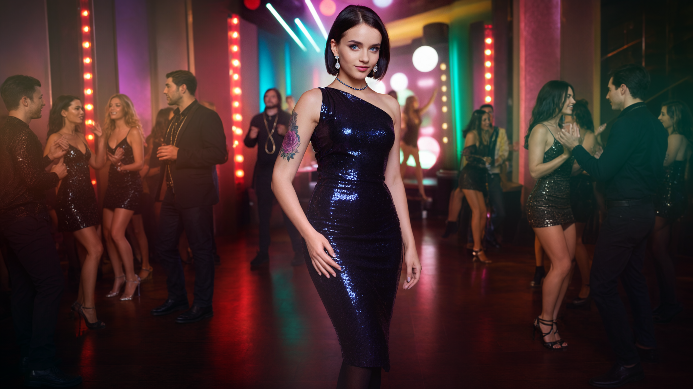
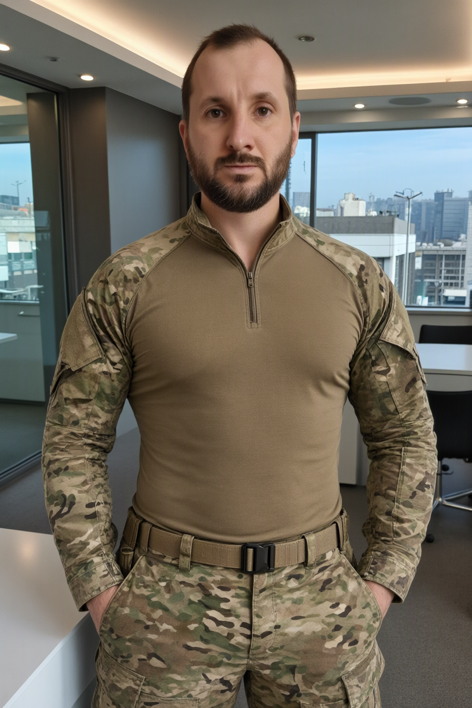
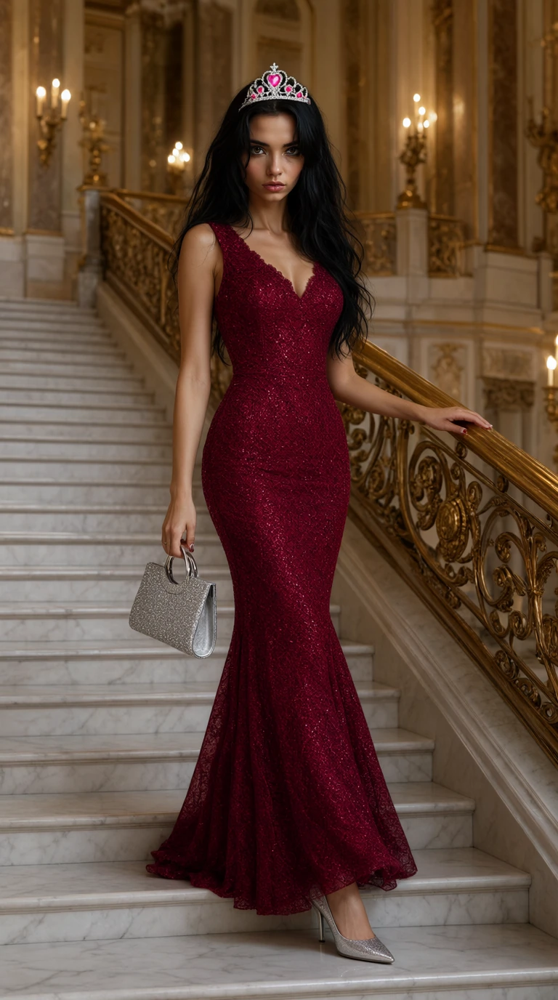

Creative Vision.
Powered by AI.
AI-generated imagery, cinematic commercials, drone photography and filmmaking — blending creative direction, technical workflows and visual storytelling.
The Signature Project
An AI-driven cinematic production, from visual concept to final post-production.

Black Luxury
Born From Fire
A cinematic fragrance commercial combining AI-generated imagery, video generation, sound design and editing. Created using ComfyUI, WAN and DaVinci Resolve.
Explore the production ↗Selected Disciplines
Creative production across generative AI, aerial photography and cinematic video.
Drone Photography
Landscapes, architecture and aerial compositions captured from above.
View gallery ↗AI Art & Visuals
Image generation, visual experimentation and creative AI workflows.
View gallery ↗Drone Videos
Aerial films and cinematic moments from the King of Drone channel.
Watch films ↗
From Portrait to Nightclub
Five stages of AI image editing: background removal, accessories, vertical outpainting and cinematic scene expansion.
Explore project ↗
Timeless Memories
Bringing vintage photographs back to life through AI colorization, restoration and contemporary reimagination using Qwen and ComfyUI.
Explore project ↗
AI Motion Transfer
Transferring martial arts movement onto a still portrait using Wan Animate, NLF Pose and SCAIL in ComfyUI.
Explore project ↗
Beyond the Wardrobe
Five AI fashion transformations — from a four-reference royal look to creative outfits and pose transfer.
Explore the collection ↗Bringing Memories to Life
Three photographs brought to life with AI-generated motion, natural gestures and emotional storytelling.
Watch all 3 animations ↗Creative Meets Technical
Hands-on production supported by programming, AI and post-production skills.